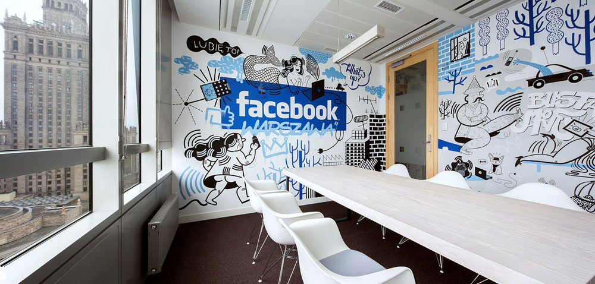

|
Facebook - крупнейшая социальная сеть в мире и одноимённая компания (Facebook Inc.), владеющая ею. Была основана 4 февраля 2004 года Марком Цукербергом и его соседями по комнате во время обучения в Гарвардском университете — Эдуардо Саверином, Дастином Московицем и Крисом Хьюзом.
Первоначально веб-сайт был назван Thefacebook и был доступен только для студентов Гарвардского университета, затем регистрацию открыли для других университетов Бостона, а затем и для студентов любых учебных учреждений США, имеющих электронный адрес в домене .edu. Начиная с сентября 2006 года сайт доступен для всех пользователей Интернета в возрасте от 13 лет, имеющих адрес электронной почты.
Facebook входит в пятёрку наиболее посещаемых веб-сайтов мира. На апрель 2017 года месячная аудитория сети составляет 1,968 миллиарда человек. На июнь 2017 года аудитория Facebook составила 2 миллиарда пользователей — это те, кто заходил на сайт хотя бы раз в месяц или за указанный промежуток времени был зафиксирован с помощью кнопки Like и следящих cookie. Суточная активная аудитория в марте составила 720 миллионов человек — столько фиксируется следящей сетью Facebook ежедневно. 24 августа 2015 года число посетителей социальной сети Facebook впервые составило один миллиард человек.
Марк Цукерберг – Родился 14 мая 1984, Уайт-Плейнс, Нью-Йорк. Американский программист, предприниматель в области интернет-технологий, долларовый миллиардер, филантроп. По версии Forbes, в 2020 году находится на 3-м месте в списке богатейших людей мира с состоянием 101.7 млрд долларов США. Также по версии Bloomberg, в 2020 году располагается на 5-м месте в списке самых богатых людей мира с состоянием $104 млрд. Один из разработчиков и основателей социальной сети Facebook. Руководитель компании Facebook Inc.
 |